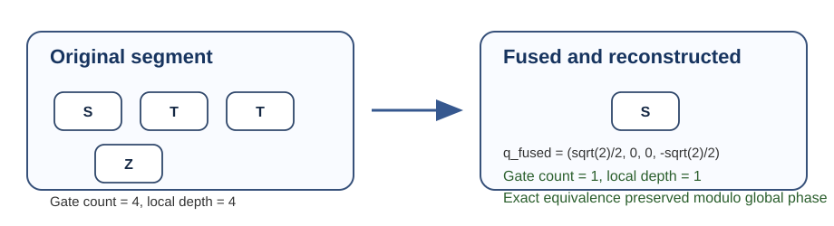

1. Introduction
Paper 2 in this series defined a canonical quaternionic intermediate representation for single-qubit circuit segments. That result was representational: named single-qubit syntax could be translated into canonical u1q(w, x, y, z) tuples that stored determinant-one gate action modulo global phase. The present paper studies the operational consequence of that representation. Once adjacent single-qubit gates are expressed as unit quaternions, fusion becomes a direct group operation rather than a syntax rewrite problem.
The motivating observation is simple. A maximal run of one-qubit gates on one wire between non-fusible boundaries has a well-defined combined single-qubit action. If each gate in the run is mapped into quaternionic IR, then the run collapses naturally to one canonical representative by quaternion multiplication followed by re-canonicalization. The main questions are therefore algorithmic rather than philosophical: how circuit order is represented, how canonicalization is maintained, how interpretable output is reconstructed, and how the resulting local simplification compares to a transparent baseline.
The contribution of this paper is modest and local. It does not attempt to optimize entangling gates, does not define a full quantum compiler, and does not claim universal superiority over existing transpilation stacks. It defines a geometry-native local optimization pass for single-qubit segments and evaluates that pass on a shipped reference corpus with an executable Python harness included in the paper package.
2. Background and dependency on papers 1–2
Paper 1 fixed the standard convention Φ identifying the unit quaternions with SU(2) and established that the only residual ambiguity in representing a single-qubit gate action modulo global phase is the sign pair {q, -q}. Paper 2 turned that observation into a canonical IR object u1q, together with normalization and sign-canonicalization rules choosing a unique representative on a closed hemisphere of S3.
The present paper uses that same convention without change. In particular, if a segment contains gates g1, ..., gn in application order and the corresponding unit quaternions are q1, ..., qn, then the fused representative is formed from the product qn ... q1. This multiplication order is the same one already used for matrix composition under Φ(qn ... q1) = Φ(qn) ... Φ(q1).

3. Problem setup
The baseline considered in this paper is deliberately simple: keep the original segment syntax unchanged. The fusion pass is therefore evaluated as a local optimizer relative to no fusion, not as a comparison against a full external compiler. This makes the benchmark claim narrow and defensible.

4. Quaternionic fusion method
The pass uses the canonical single-qubit IR defined in paper 2. Each source gate is first translated into a unit quaternion and canonicalized into u1q form.
Here Can denotes the normalization and sign-canonicalization map already fixed in paper 2. The explicit ordering matters: the first gate applied in the circuit appears on the right in the quaternion product.
The proof is direct. Quaternion multiplication follows the same order as matrix composition under the inherited map Φ, and the final canonicalization step changes only the choice of representative inside the sign class {q, -q}.
Determinism follows because translation, multiplication, normalization, and sign-canonicalization are all deterministic once the segment order is fixed.

5. Axis-aware reconstruction
A fused quaternion is a complete semantic result, but human-facing compiler output often benefits from a more interpretable reconstruction layer. The key point is that semantic fusion and reconstructed syntax are separate concerns: equivalence is proved at the quaternion level, while reconstruction is a presentation choice.
- if the quaternion equals the identity representative, emit no gate;
- if it matches a known named-gate quaternion exactly, emit that named gate;
- if exactly one of x, y, z is nonzero, recover Rx(θ), Ry(θ), or Rz(θ) from the half-angle relation;
- otherwise emit a generic canonical primitive, represented in this paper as u1q(w, x, y, z).
This is a presentation-layer proposition, not the core equivalence proof. The canonical quaternion itself is the authoritative representation; reconstruction is a useful view when the fused action lies on a recognizable axis or matches a known named gate.

6. Theoretical properties
This is the direct local simplification rule induced by the quaternionic model. In the IR itself, the fully fused segment is already minimal in count because it is stored as one canonical payload.
7. Benchmark methodology
The evaluation shipped with this paper uses a small executable reference corpus rather than a large external benchmark suite. This choice is intentional: the paper aims to establish a reproducible local method, not to overstate broad compiler dominance.
The corpus categories are:
- textbook single-qubit chains,
- mixed named-gate segments,
- rotation-heavy segments,
- segments extracted from small two-qubit circuits, and
- a small ansatz-style segment.
The baseline flow is syntax-preserving: keep each segment exactly as written and perform no fusion. The evaluated pass translates the segment into quaternion IR, multiplies in circuit order, canonicalizes, reconstructs, and then measures the resulting local output representation.
The reported metrics are:
- original gate count,
- optimized gate count,
- original and optimized local depth,
- exact equivalence preservation up to global phase using canonical quaternion equality,
- number of segments collapsed to one canonical representative, and
- fraction of outputs recoverable as named or axis-aligned gates.
8. Worked examples and measured reference results
8.1 Worked examples
The reference harness confirms several interpretable simplifications:
Rx(pi/2) ; Rx(pi/2)fuses to canonical quaternion (0, 1, 0, 0) and reconstructs asX.Rz(pi/4) ; Rz(pi/4)fuses to (sqrt(2)/2, 0, 0, sqrt(2)/2) and reconstructs asS.H ; Z ; Hfuses to the canonicalXrepresentative.S ; T ; T† ; Zfuses to the canonicalS†representative.- A segment such as
Rz(pi/5) ; Rz(pi/10)is not a named gate in the lookup table but is recovered exactly as the axis-aligned gateRz(0.3*pi).
8.2 Measured aggregate results
The shipped benchmark harness evaluates thirteen single-qubit segments containing thirty-six input gates in total. Under the syntax-preserving baseline, these remain thirty-six local segment gates. Under quaternionic fusion with layered reconstruction, they reduce to eleven reconstructed outputs, including two identity eliminations.
| Metric | Measured value |
|---|---|
| Segments evaluated | 13 |
| Original single-qubit gates | 36 |
| Optimized reconstructed outputs | 11 |
| Gate-count reduction | 25 (69.44%) |
| Local depth reduction | 25 (69.44%) |
| Identity eliminations | 2 |
| Named or axis-aligned recoveries | 8 of 13 segments (61.54%) |
All measured segments pass the paper's authoritative equivalence check: equality of canonical quaternion representatives after normalization and sign-canonicalization.
8.3 Category summary
| Category | Segments | Original gates | Optimized outputs | Compression ratio |
|---|---|---|---|---|
| Textbook single-qubit chains | 3 | 7 | 3 | 0.428571 |
| Mixed named-gate segments | 3 | 9 | 2 | 0.222222 |
| Rotation-heavy segments | 4 | 11 | 3 | 0.272727 |
| Segments from two-qubit circuits | 2 | 4 | 2 | 0.5 |
| Ansatz-style segments | 1 | 5 | 1 | 0.2 |
These numbers should be read narrowly. They describe only the shipped reference corpus and only the local single-qubit segments targeted by the pass. They do not claim global optimality or broad superiority over external compilers.
9. Standard mathematics vs. RQM Technologies framing
9.1 Standard ingredients
The mathematical facts used here are standard: passage from U(2) to SU(2) modulo global phase, the unit-quaternion model of SU(2), the sign ambiguity q ~ -q, and quaternion multiplication as the composition rule.
9.2 Project-specific method choices
The project-specific contribution is the optimization-method framing: canonical u1q payloads, explicit segment extraction boundaries, the local fusion operator, the layered reconstruction policy, and the choice of a simple syntax-preserving baseline for initial evaluation. These are compiler-method choices, not new physics.
10. Scope, limitations, and non-claims
- This paper does not optimize entangling gates.
- It does not define a full quantum compiler.
- It does not claim universal superiority over all baseline compilers.
- It does not claim hardware speedups.
- It does not claim overall circuit optimality.
- It does not solve the general single-qubit synthesis problem in all gate sets.
11. Conclusion
Quaternionic representation is operationally useful because it turns local single-qubit fusion into an exact group operation followed by a deterministic canonicalization step. In that sense, the representation is not only descriptive: it induces a geometry-native optimization pass for single-qubit segments. The measured reference corpus shows that the pass can reduce local gate count and local depth while preserving exact segment action modulo global phase, and can often recover interpretable named or axis-aligned outputs.
Appendix A. Benchmark harness note
The results reported here are generated by the shipped script artifacts/code/benchmark_gate_fusion.py, which writes benchmark_results.json. The harness uses only the Python standard library and the fixed quaternion convention inherited from papers 1 and 2.
References
- Cross, Andrew W., Ali Javadi-Abhari, Thomas Alexander, Niel de Beaudrap, Lev S. Bishop, Steven Heidel, Colm A. Ryan, Prasahnt Sivarajah, John A. Smolin, Jay M. Gambetta, and Blake R. Johnson. “OpenQASM 3: A Broader and Deeper Quantum Assembly Language.” ACM Transactions on Quantum Computing 3(3), Article 12, 2022. DOI: 10.1145/3505636.
- Hall, Brian C. Lie Groups, Lie Algebras, and Representations: An Elementary Introduction, 2nd ed. Springer, 2015.
- Kuipers, Jack B. Quaternions and Rotation Sequences: A Primer with Applications to Orbits, Aerospace, and Virtual Reality. Princeton University Press, 1999.
- Nielsen, Michael A., and Isaac L. Chuang. Quantum Computation and Quantum Information, 10th Anniversary Edition. Cambridge University Press, 2010.
- Smith, Robert S., Michael J. Curtis, and William J. Zeng. “A Practical Quantum Instruction Set Architecture.” arXiv preprint arXiv:1608.03355, 2016.